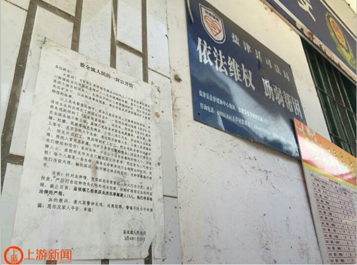

<!DOCTYPE HTML PUBLIC "-//W3C//DTD HTML 4.01//EN" "http://www.w3.org/TR/html4/strict.dtd">
<html lang="en" ng-app="ifengsnews">
<head>
	<meta http-equiv="Content-Type" content="text/html;charset=UTF-8">
	<meta http-equiv="X-UA-Compatible" content="IE=edge,chrome=1">
  <!-- 360 浏览器就会在读取到这个标签后，立即切换对应的极速核 -->
  <meta name="renderer" content="webkit">
  <!-- 禁止百度转码 -->
  <meta http-equiv="Cache-Control" content="no-siteapp">
	<meta http-equiv="X-UA-Compatible" content="IE=edge,chrome=1">
  <!-- 360 浏览器就会在读取到这个标签后，立即切换对应的极速核 -->
  <meta name="renderer" content="webkit">
  <!-- 禁止百度转码 -->
  <meta http-equiv="Cache-Control" content="no-siteapp">
  <meta name="description" content="">
  <meta name="description" content="">
  <!-- 手机视角 -->
  <meta name="viewport" content="width=device-width, initial-scale=1.0">
	<title>凤凰新闻</title>
	<base href="/">
	<link rel="stylesheet" href="./css/Materialize.css">
	<link href="./css/swiper.css" rel="stylesheet">
	<link rel="stylesheet" href="./css/index.css">
	<script src="./js/jquery-1.12.0.js"></script>
	<script src="./js/swiper.jquery.js"></script>
	<script src="./js/angular.js"></script>
  <script src="./js/angular-animate.js"></script>
  <script src="./js/angular-route.js"></script>
	<script src="./js/angular-touch.js"></script>
  <script src="./js/index.js"></script>
</head>
<body ng-controller="indexCtrl">
	  <if-yingdao ng-if="isFirstOpen"></if-yingdao>
	  <if-top-tab></if-top-tab>
	  <ng-view id="view"></ng-view>
    <if-tab-bar></if-tab-bar>
   <!-- <div class="second">
        <ul>
        	<li class="second-title">
             <p>
                警察被曝辱骂2女孩“负责人”：警察加班累着了
             </p>
           <span class="second-time">2016/06/10 17:22</span>
           <span class="second-mintitle">封面新闻</span>
					</li>
					<li class="second-image">
            
					</li>
					<li class="second-main">
					<p>
              原标题: 深圳警察被曝辱骂女孩是男人要脱衣检查 遭辱骂女子独家回应<br>
							21号在深圳宝安西乡流塘大门口，两名女孩出去逛街，被警察检查身份证…后被依法强制传唤！在去派出所的路上她偷偷录下这么一段视频……
							<b>封面新闻独家连线当事人：骂人男子没有出示警官证</b></br>
							6月10日，网友@不敢说话的屁民在新浪微博上发出一段警车中的对话视频，引发了数万网友转发。</br>
							从视频可以看到，两个女孩过马路时被警察盘查身份证，由于没带身份证，被警察强制传唤。在警车上，双方起了一些言语冲突。
视频中显示，开车男子身着警服（下称A），他与后座的女孩发生了争执。女孩质疑A的警察身份，A表示，“假的（警察）你也要先配合”，并说“我还怀疑你是男人，你他妈上女厕所干嘛，你脱衣服给我看下。脑子有病，（说）我不是警察。”当女孩要求A出示警官证时，A告诉女孩“你不懂法律，不要胡说八道。”
10日下午，封面新闻（thecover.cn）联系上当时在警车上的女孩方青（化名），她告诉封面新闻记者：5月21日中午，27岁的方青和妹妹，24岁的方兰（化名）正前往一位姐姐家过周末。走到深圳宝安区建安二路流塘市场门口时，方青和方兰突然被身后的一名穿警服的男子A叫住。A向两姐妹提出，要查她们的身份证。
根据方青在电话里讲述，她和方兰均没有携带身份证，男子A告诉她“我怀疑你是罪犯，你必须跟我去派出所”。方青要求A出示警官证，否则不能和他去派出所。A没有正面回应，伸手准备拉方青和方兰的手，试图将她们拉上警车。方兰挣扎得很厉害。在拉扯过程中，出现另一名没有穿警服的男子B，帮助A将两姐妹拉上警车。
上了警车后，方青拿出手机拨打110报警，说自己可能被绑架了。当时，接报警电话的工作人员询问了方青的身份和所在地点，没有做其它回应便挂了电话。然后就发生了视频中的那一幕，方青称，是用自己手机偷偷录下来的。
方青说，随后两名男子将她和妹妹带进深圳公安局宝安分局流塘派出所，问了将近1个小时。
据方青表示，进入一个审讯室“录数据”时，A一直在身边恐吓。方青告诉封面新闻：对方说“要拘留我们24小时，把我们和艾滋病强盗那些人关在一起”，“还要给我们留案底，让我们有前科”。
方青说，她和妹妹过于害怕，开始哭。此时，另一名警官（下称Z）进入审讯室，将方青和男子B叫出门了解情况。方青向Z表示，当男子A在菜市场门口盘问她们时，她们并没有反抗。在菜市场现场也有监控，可以去调监控记录来看。但方青也跟Z提到,A没有出示警官证的问题，Z当时回答她说，A的流程完全合法。
5月21日14：17，方青将手机中录的视频上传到了网上。
在与封面新闻记者的通话过程中，方青还提到，出了派出所之后，当天下午她接到一名男子的电话，该男子声称是“负责人”，向她表示，“那些警察是因为前一天加了24小时班累着了，然后态度不好，要我们理解”。6月10日下午3点，封面新闻记者拨通了方青提供的这个“负责人”电话。电话接通后，记者向对方询问5月21日发生的事情，对方说“打错了”，随即挂断了电话。
6月10日下午，封面新闻记者拨打流塘派出所电话，接电话的工作人员称，自己只接110报警电话，不了解情况。当封面新闻记者问到是否在5月21日中午接到一名女子的报警电话时，该工作人员表示自己当天没有值班，不知道。
封面新闻记者何晞宇
最新进展
6月10日下午3点，@平安宝安发出微博：我局已关注到网上转发的流塘所民警执法不规范的视频。市局、分局督察部门目前已展开对该情况的全面调查。感谢社会各界对宝安警方的执法工作予以监督和关注。
					</p>
				</li>
        <li class="second-link"></li>
        <li class="second-liuyan"></li>
         </ul>
   </div> -->

  </body>
 </html>
